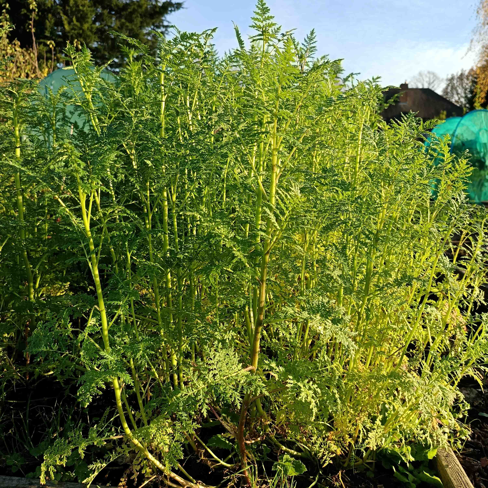

Living Mulches or Green Manures
Using Green Manures in Your Garden
Leaving your garden beds bare after harvest—or while waiting to transplant seedlings—can lead to nutrient loss, soil erosion, and weed invasions. Instead, try planting fast-growing cover crops such as buckwheat and phacelia. These hardy plants protect your soil from wind, sun, and heavy rain while suppressing weeds and improving fertility. Plus, their beautiful flowers attract pollinators like bees, giving them a valuable nectar source.
How to Sow Buckwheat and Phacelia
- Prepare the soil – Clear any large weeds or debris, then loosen the top layer of soil with a rake.
- Broadcast the seeds – Scatter the seeds evenly over the soil surface by hand (no need for precise spacing).
- Rake lightly – Gently rake the seeds in to ensure good soil contact, covering them lightly (about 1 cm deep).
- Water if needed – In very dry weather, water lightly to help germination. Once established, these plants are fairly drought-tolerant.
When to Plant
Sow seeds anytime between April and early September for quick soil coverage.
How Fast Do They Grow?
Both buckwheat and phacelia grow rapidly, often flowering in just 5–6 weeks after sowing.
When to Remove
How to Remove
- For winter protection: If it's late in the season, leave the plants in place! Frost will kill them, and the dead foliage acts as a natural mulch. Simply rake it away in spring before planting.
- For mid-season removal: Cut stems at ground level and leave the roots to decompose. This helps stabilize the soil, retain nutrients, and feed beneficial microbes.
By using these cover crops, you'll keep your soil healthy, reduce weeds, and support pollinators—all while giving your garden a vibrant, green boost!
What other green manures can I plant?
For Autumn/Winter cover, you can sow a mix of rye and vetch. Here in Birmingham, you'll need to sow by the last week in September to ensure germination. Vetch is a legume which will help fix nitrogen in your soil, while rye's deep roots will improve the soil structure.